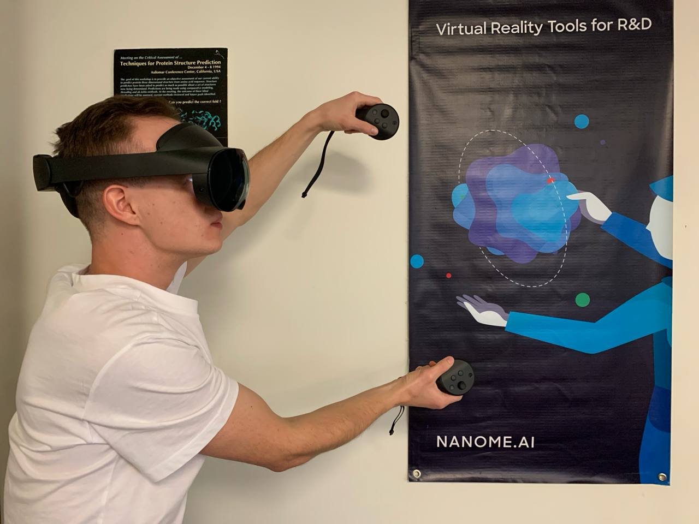
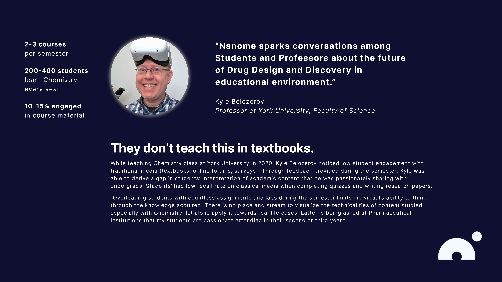
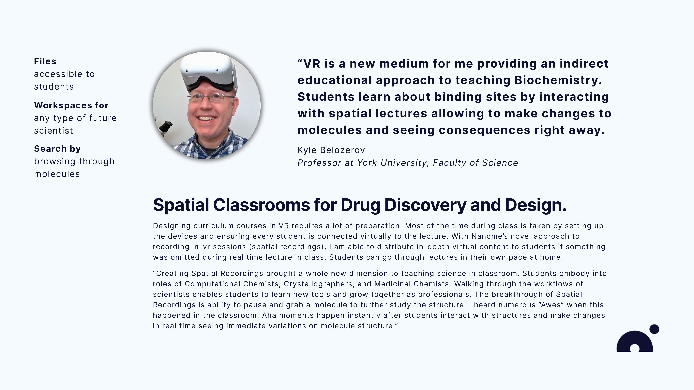
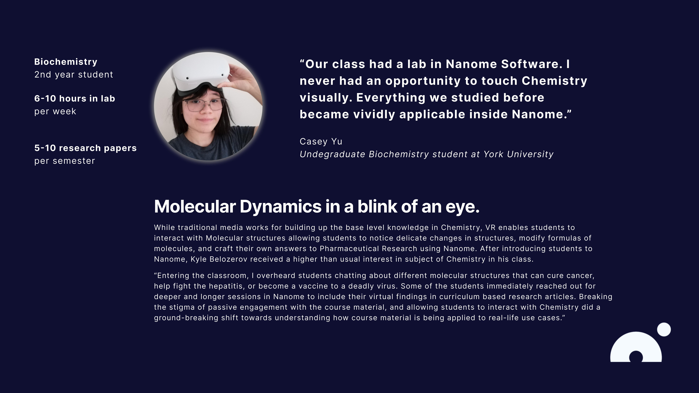
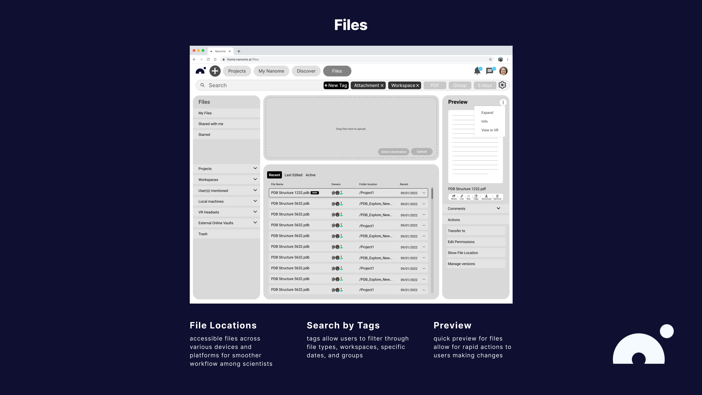
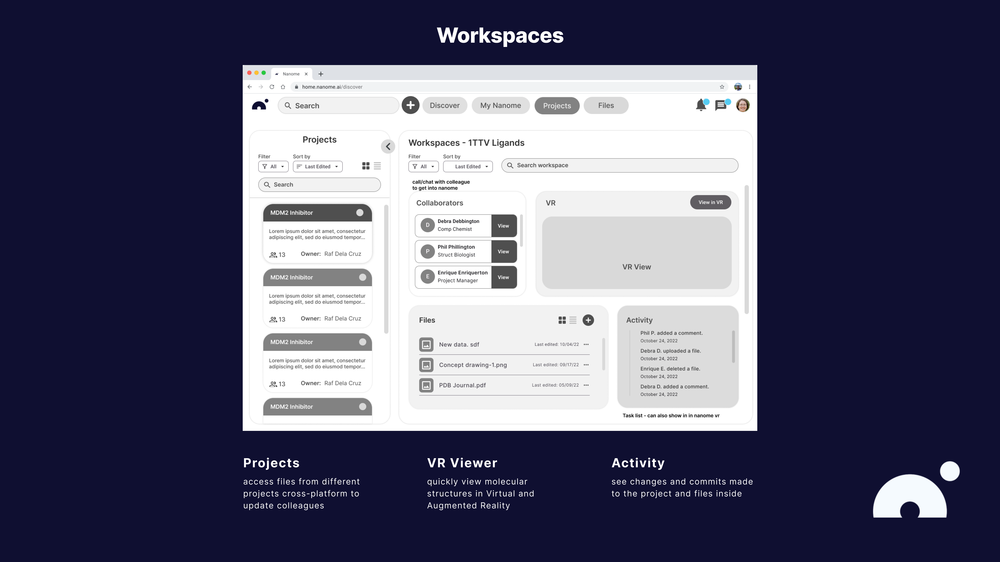
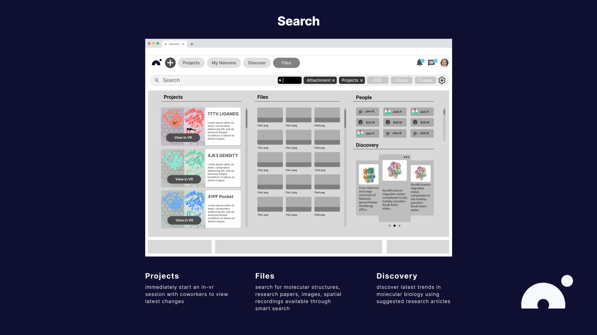

Contribution to Nanome

At Nanome I owned interaction research across Mixed Reality and 2D surfaces, prototyped for Nanome 2.0, and built an LLM-powered pipeline to automate qualitative user feedback processing. That automation freed the design team from manual data sorting during a critical product sprint, directly unblocking interface decisions on the 2.0 release. I worked across scientists, engineers, and C-level stakeholders, translating domain-specific usability findings into actionable design requirements for haptics, spatial UI, and sound feedback.



User Research
Nanome serves five user segments: Crystallographers, Computational Chemists, Biologists, Professors, and Students, spanning drug discovery research to academic coursework. I ran playtesting sessions with Professors to surface friction in the XR and 2D workflows. Findings revealed recurring issues in iconography legibility, typeface scaling in headset, and spatial navigation. From those sessions I derived updated personas, a revised wireframe set, and categorized feedback directly actionable by the 2.0 design team.
Prototyping the interfaces for XR and 2D
Spatial prototypes were built in ShapesXR; 2D in Figma grounded on Google Material Design 3 components to accelerate iteration and maintain cross-platform consistency. Primary focus areas: File Management (cross-device drag-and-drop between local machine, server, and XR hardware), Workspaces (project overview with activity feed and in-headset VR Preview), and a global Search modeled on macOS Spotlight, returning molecular structures, files, and collaborator profiles in a single surface. Clarity of these systems directly supports pharmaceutical researchers working on time-sensitive drug discovery workflows.


